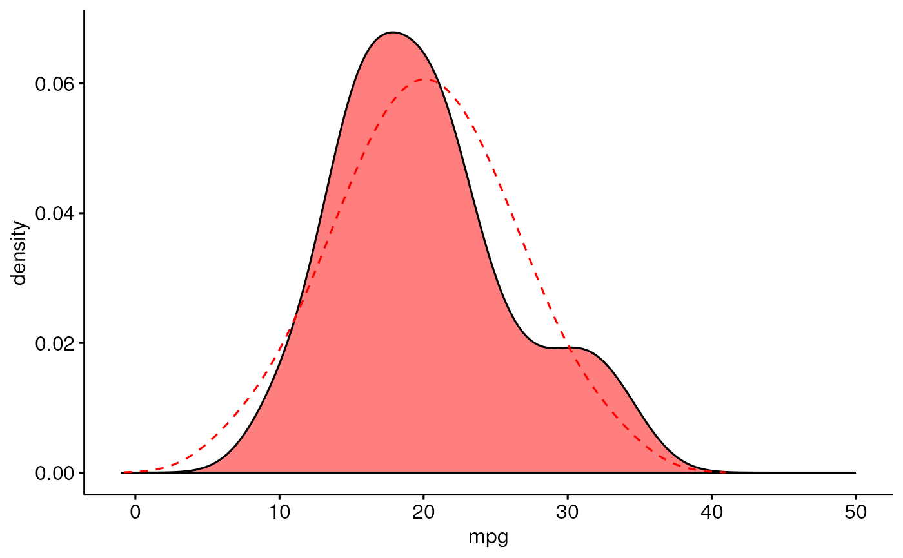
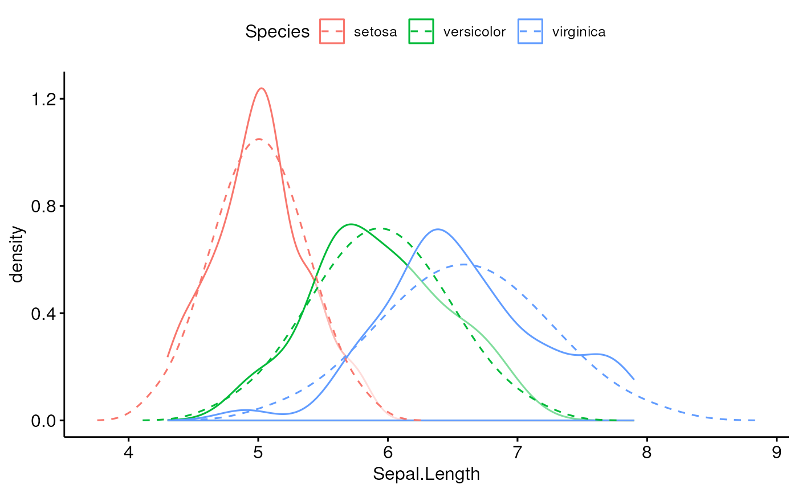
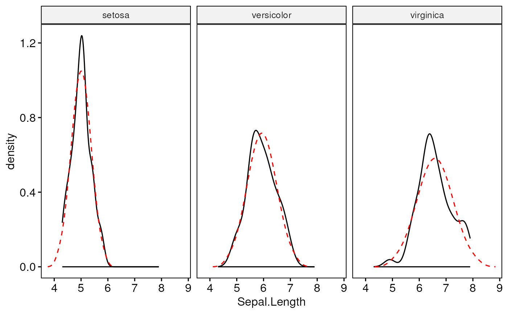

Overlay normal density plot (with the same mean and SD) to the density distribution of 'x'. This is useful for visually inspecting the degree of deviance from normality.
stat_overlay_normal_density(
mapping = NULL,
data = NULL,
geom = "line",
position = "identity",
na.rm = FALSE,
show.legend = NA,
inherit.aes = TRUE,
...
)Set of aesthetic mappings created by aes(). If specified and
inherit.aes = TRUE (the default), it is combined with the default mapping
at the top level of the plot. You must supply mapping if there is no plot
mapping.
The data to be displayed in this layer. There are three options:
If NULL, the default, the data is inherited from the plot
data as specified in the call to ggplot().
A data.frame, or other object, will override the plot
data. All objects will be fortified to produce a data frame. See
fortify() for which variables will be created.
A function will be called with a single argument,
the plot data. The return value must be a data.frame, and
will be used as the layer data. A function can be created
from a formula (e.g. ~ head(.x, 10)).
The geometric object to use to display the data for this layer.
When using a stat_*() function to construct a layer, the geom argument
can be used to override the default coupling between stats and geoms. The
geom argument accepts the following:
A Geom ggproto subclass, for example GeomPoint.
A string naming the geom. To give the geom as a string, strip the
function name of the geom_ prefix. For example, to use geom_point(),
give the geom as "point".
For more information and other ways to specify the geom, see the layer geom documentation.
A position adjustment to use on the data for this layer. This
can be used in various ways, including to prevent overplotting and
improving the display. The position argument accepts the following:
The result of calling a position function, such as position_jitter().
This method allows for passing extra arguments to the position.
A string naming the position adjustment. To give the position as a
string, strip the function name of the position_ prefix. For example,
to use position_jitter(), give the position as "jitter".
For more information and other ways to specify the position, see the layer position documentation.
If FALSE (the default), removes missing values with a warning. If TRUE silently removes missing values.
logical. Should this layer be included in the legends?
NA, the default, includes if any aesthetics are mapped.
FALSE never includes, and TRUE always includes.
It can also be a named logical vector to finely select the aesthetics to
display. To include legend keys for all levels, even
when no data exists, use TRUE. If NA, all levels are shown in legend,
but unobserved levels are omitted.
If FALSE (the default for most ggpubr functions),
overrides the default aesthetics, rather than combining with them. This is
most useful for helper functions that define both data and aesthetics and
shouldn't inherit behaviour from the default plot specification. Set to
TRUE to inherit aesthetics from the parent ggplot layer.
other arguments to pass to geom_line.
# Simpledensity plot
data("mtcars")
ggdensity(mtcars, x = "mpg", fill = "red") +
scale_x_continuous(limits = c(-1, 50)) +
stat_overlay_normal_density(color = "red", linetype = "dashed")

# Color by groups
data(iris)
ggdensity(iris, "Sepal.Length", color = "Species") +
stat_overlay_normal_density(aes(color = Species), linetype = "dashed")

# Facet
ggdensity(iris, "Sepal.Length", facet.by = "Species") +
stat_overlay_normal_density(color = "red", linetype = "dashed")
